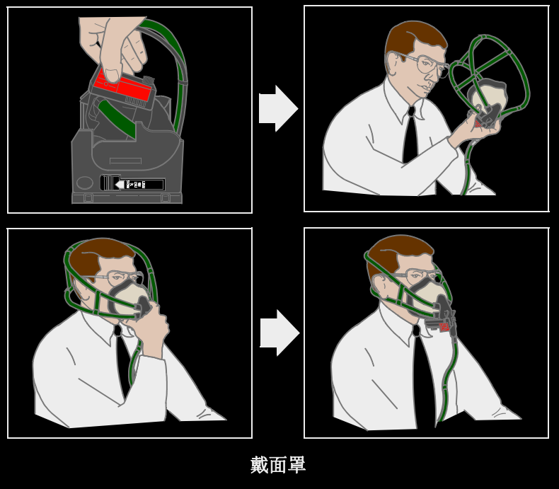

1 氧气压力（OXY PRESS）指示器
指示机组或旅客氧气瓶压力。
2 旅客氧气（PASS）电门
RESET（复位） – (部分选型安装)如果座舱高度低于14,650英尺，电动关闭流量控制组件。
NORMAL（正常） – （带护盖位置）如果座舱高度升至14，000英尺/15650英尺时，旅客面罩脱落并且旅客氧气系统自动启动。
ON（开） – 无论座舱高度如何，系统启动并且面罩脱落。
3 指示选择（HDG SEL）电门(选型)
（由弹簧保持在 CREW 位）
PASS（旅客） – 氧气压力指示器显示旅客供氧压力。
CREW（机组） – 氧气压力指示器显示飞行机组供氧压力。
4 旅客氧气（PASS OXY）接通指示灯
亮（琥珀色）——旅客氧气系统正在工作并且面罩已脱落。
氧气面罩面板
1 氧气流量指示器
当氧气流通时以黄色十字指示。
2 复位/测试（RESET/TEST）电门
按压 –
• 当左侧氧气面罩面板门关闭并且氧气接通（OXY ON）旗不显示，短时打开氧气和面罩话筒以测试调节器。
• 当左侧氧气面罩面板门关闭并且氧气接通（OXY ON）旗显示，将关闭氧气并且禁用面罩话筒，并使吊杆式话筒生效。
(根据选型,稍有不同)
3 氧气面罩释放手柄
• 从储存箱里释放面罩
• 当储存箱门打开时放出氧气接通（OXY ON）旗
• 氧气开始流动
• 紧捏充气手柄时氧气面罩带充气
• 面罩带充气时流量指示器短时显示一个黄色十字。
1 正常/100%（NORMAL/100%）电门
N（正常） – 按需提供空气/氧气混合气（混合比取决于座舱高度）。
100% – 按需供给100%氧气。
2 氧气面罩应急（EMERGENCY）/测试选择器（旋转）
正常（非应急）位置 – 根据正常/100%电门的位置，按需提供空气/氧气混合气或100%氧气。当座舱高度高于预设值时，以正压自动供应 100%氧气。
应急（EMERGENCY）位置（顺箭头方向旋转） – 在所有座舱高度下以正压供应100%氧气（防止烟和有害气体的侵入）。
CAUTION: 使用应急（EMER）方式使氧气的损耗率比在100% 或是正常（NORM）方式下大大增加。只在情况需要时才使用应急（EMER）方式。
Note: 在应急（EMER）方式下通讯会困难。如条件允许调到100% 或正常（NORM）方式。
PRESS TO TEST（按压测试） – 测试供给调节器的正压。
3 烟雾通气活门选择器
上 – 通气活门关闭。
下 – 通气活门打开，氧气流向防烟镜。
飞行机组氧气系统
飞行机组氧气系统使用快速戴上自动加压呼吸面罩/调节器，它位于每个机组站位。(选型)27,000英尺以上时开始加压呼吸。
由单个氧气瓶供氧。氧气压力显示在位于后顶部面板的指示器上。通过减压调节器控制氧气流量，以提供低压氧气。系统的压力可高达1850psi。
氧气气流由一个装在氧气面罩上的调节器控制。按压正常/100%（NORMAL/100%）控制杆，调节器就从空气/氧气混合气调节到100%氧气。旋转应急 / 测试 （EMERGENCY/TEST）选择器，调节器就调节到加压供氧。
飞行机组氧气面罩的使用
戴面罩说明
戴面罩，用拇指和食指抓住调节器将其从存放处取出，紧捏充气手柄从箱中取出面罩：
• 为面罩的头带充气
• 短时显示有色的氧气流量指示
• 将面罩带到头上并松开手柄，头带收缩以适应头部与面部

收面罩说明(各选型稍有不同)
按下列步骤收氧气面罩:
• 缠绕供气软管放入储存箱底部,尽量以最大直径缠绕。确保面罩带完全放气。
• 拿住面罩的调节器，将面罩外壳朝下，面罩内部朝自己。
• 抓住并下拉面罩带，使交叉的束带收在面罩壳下方。允许多余的面罩带悬在其下方。
WARNING: 在整个过程中，不能推动位于需求调节器上的红色充气手柄。这样做会使面罩带充气，妨碍正常收氧气面罩。如果发生这种情况，应松开充气手柄排出氧气，重新开始收面罩程序。
CAUTION: 不能将面罩交叉束带推入鼻罩内或其后方。这会导致充气时交叉束带挂在面罩上。
• 将充气软管放在面罩中部的下方。
• 先从面罩带开始，将面罩-调节器组件放入储存箱（调节器朝上）。
• 按压组件，直到面罩-调节器完全固定于储存箱止动片。
• 将调节器稀释控制设置为100%（按下切换开关），并将安全钮设置在正常位。
• 关闭左侧门。将看到门中间的“OXY ON”旗滑动。
• 按下，然后松开左侧门上的“TEST AND RESET”控制杆。确保松开控制杆时“OXY ON”旗消失。
• 关闭右侧门，确保不会挤压到气管